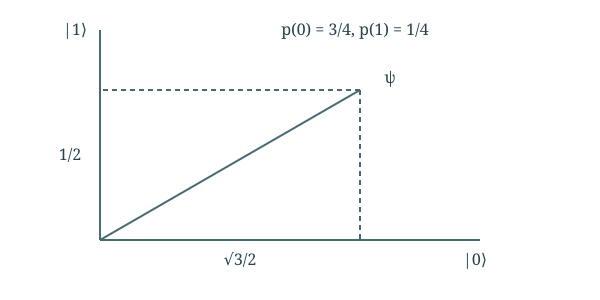

Chapter 04
Quantum States and Measurement
Basic linear algebra supplies the language, but physical postulates give that language meaning. We connect vectors, projections, and operators to preparations, transformations, and measurable outcomes.
In this chapter · 4 sections · 12 topics
4.1
State Representation
Ket and bra notation organize familiar vector operations; they do not replace linear algebra.
4.1.1 Basis coordinates and ket notation§
In a chosen orthonormal basis, a qubit has coordinates \(\psi=(\alpha,\beta)^T\). Dirac notation writes the vector as \(\ket\psi=\alpha\ket0+\beta\ket1\), where \(\ket0=(1,0)^T\) and \(\ket1=(0,1)^T\). The ket brackets name a vector, not a new operation. A basis label names a possible outcome of the corresponding basis measurement. A superposition is a linear combination relative to that basis; the same vector can itself be a basis vector in another basis. “Being in a superposition” therefore requires specifying the reference basis.
4.1.2 Complex inner products and bra notation§
For complex vectors, define \(\braket\phi\psi=\sum_j\phi_j^*\psi_j\). The bra \(\bra\phi\) is the conjugate-transpose row that performs this operation. Conjugation ensures \(\braket\psi\psi=\sum_j|\psi_j|^2\geq0\). For a unit vector \(\phi\), the overlap is the coefficient of the component along \(\phi\); the projected vector is \(\ket\phi\braket\phi\psi\). The coefficient can be complex, so a picture of a real-plane shadow illustrates only a restricted case. Orthogonality means zero overlap and will correspond to perfectly distinguishable basis alternatives.
4.1.3 Changes of basis§
Let \(\ket\pm=(\ket0\pm\ket1)/\sqrt2\). These form an orthonormal basis. The state \(\ket0\) is also \((\ket++\ket-)/\sqrt2\). Its coordinates changed, not its physical preparation. If the columns of \(B\) are the new basis vectors expressed in old coordinates, the new coordinates are \(B^\dagger\psi\). This passive change of description must be distinguished from physically applying a gate. Applying \(B^\dagger\) and then measuring in the old basis does, however, implement a measurement in the new basis. That connection will become useful in circuits.
4.2
State and Measurement Postulates
The first two postulates connect unit vectors to outcome probabilities and conditional states.
4.2.1 Pure states and normalization§
The pure-state postulate represents a system by a unit vector in a complex inner-product space, with vectors differing only by global phase representing the same physical state. Thus \(\sum_j|\alpha_j|^2=1\). A qubit can be written \(\cos(\theta/2)\ket0+e^{i\phi}\sin(\theta/2)\ket1\). The squared magnitudes specify one measurement’s probabilities, while relative phase affects other measurements. Not every preparation has a pure-state description: classical uncertainty about preparation or entanglement with another system can require a density matrix. The main text first treats pure preparations and complete joint systems.
4.2.2 Projective measurement and conditional states§
For a projective measurement with orthogonal projectors \(P_j\) summing to identity, the Born rule gives \[p(j)=\|P_j\ket\psi\|^2.\] Conditional on an outcome with nonzero probability, the state becomes \(P_j\ket\psi/\sqrt{p(j)}\). For one-dimensional projectors \(P_j=\ket{e_j}\bra{e_j}\), this is measurement along orthonormal directions. If \(\ket\psi=(\sqrt3/2)\ket0+(1/2)\ket1\), the outcomes have probabilities \(3/4\) and \(1/4\). One run produces one outcome, not both fractional answers. Restoring unit length describes the state after conditioning on that outcome.

4.2.3 Repeated measurements on independently prepared states§
Repeated measurements on independently prepared copies estimate a distribution. If an event has probability \(p\), its count in \(N\) independent trials has mean (expected count) \(Np\) and variance (mean squared deviation from that count) \(Np(1-p)\). The observed fraction has typical fluctuation of order \(1/\sqrt N\), not exact equality to \(p\). This differs from measuring the same system twice without re-preparing it: after an ideal projective measurement, the same outcome is certain on immediate repetition in the same measurement. An experiment must specify both preparation and measurement before its counts can be interpreted.
4.3
Quantum Evolution
The evolution postulate selects overlap-preserving transformations from the larger class of linear maps.
4.3.1 Operator action on a basis§
A linear transformation is determined by its action on basis vectors: \(A\sum_j\alpha_j\ket j=\sum_j\alpha_j A\ket j\). Those basis images are its matrix columns. For example, a real-plane shear with columns \((1,0)^T\) and \((1,1)^T\) moves the second basis direction while retaining the first. It illustrates matrix construction but is not a valid deterministic isolated-system quantum evolution because it does not preserve all lengths and overlaps. Linear algebra describes many maps; the physical postulate selects which ones describe closed evolution.
4.3.2 Adjoints and inner products§
After applying \(A\) to a state, its overlap with reference \(\phi\) is \(\braket\phi{A\psi}\). The adjoint is defined by \[\braket\phi{A\psi}=\braket{A^\dagger\phi}\psi.\] We can transform the state and keep the reference fixed, or transform the reference by the adjoint and keep the state fixed. In coordinates \(A^\dagger=(A^*)^T\). For a rotation, the adjoint rotates backward. For a real stretch \(A=\operatorname{diag}(2,1)\), it is the same stretch, not its inverse. The overlap identity, not “undoing,” is the general meaning of the adjoint.
4.3.3 Unitary evolution§
The evolution postulate assigns a unitary \(U\) to a closed system’s evolution: \(U^\dagger U=I\). Consequently, \[\braket{U\phi}{U\psi}=\braket\phi\psi.\] Norms, total probability, and distinguishability through overlaps are preserved; the inverse is \(U^\dagger\). For finite-dimensional linear maps on a fixed state space, preservation of every vector’s norm implies this condition. Normalizing each output separately after an arbitrary map would generally be nonlinear and does not establish a physical evolution rule. Measurement is not such an invertible map on the measured system; its outcomes and any environment must be treated separately.
4.4
Observables and Distinguishability
Eigenspaces specify measurements; overlaps constrain which inputs they can distinguish.
4.4.1 Eigenvectors and eigenspaces§
An eigenvector satisfies \(A\ket v=\lambda\ket v\). Its direction is preserved; its coefficient changes by \(\lambda\). For \(Z=\operatorname{diag}(1,-1)\), the basis vectors have eigenvalues \(+1,-1\). For \(X\), which exchanges zero and one, \(\ket+\) and \(\ket-\) have those eigenvalues. A vector in a unitary eigendirection gains only a phase, since the eigenvalue has magnitude one. Eigenvectors therefore identify especially simple responses to an operation and help us choose useful input states.
4.4.2 Hermitian operators and spectral projections§
A Hermitian operator \(A=A^\dagger\) has real eigenvalues and an orthonormal eigenbasis. Grouping equal eigenvalues gives the spectral decomposition \(A=\sum_j a_jP_j\). In the associated ideal measurement, the numerical result is \(a_j\) and the probability is \(\|P_j\psi\|^2\). Degeneracy means an outcome selects a subspace, not a unique vector. This makes precise the phrase “measure an observable”: specify both the eigenspaces used for projection and the numerical labels reported. Changing an observable can change outcome probabilities without changing the input preparation.
4.4.3 Nonorthogonal state discrimination§
Perfectly distinguishing two pure states requires an outcome that identifies each with certainty. Such a measurement separates them into orthogonal outcome subspaces, so their overlap must be zero. Equivalently, a unitary interaction that produces perfectly distinct records cannot turn a nonzero initial overlap into zero, because unitaries preserve overlaps. Hence \(\ket0\) and \(\ket+\), whose overlap is \(1/\sqrt2\), cannot always be identified correctly from one unknown copy. This limit is structural, not a defect of a particular detector. General measurements can trade errors for inconclusive outcomes, but cannot evade this deterministic limit.
Related appendix: Linear algebra reference.